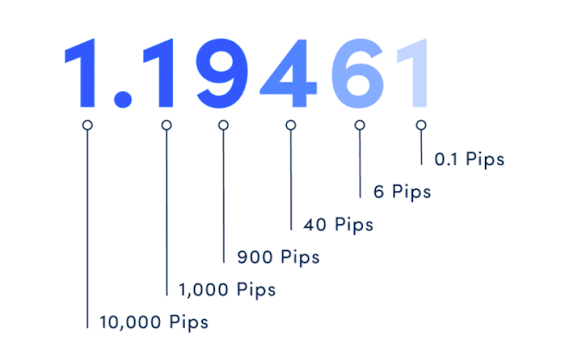
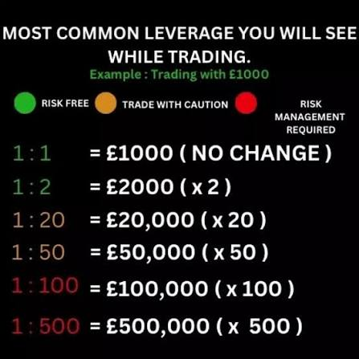

In Forex trading, price movements are measured in very small increments, and understanding these units is critical for beginners. The most common unit is the pip, short for “percentage in point” or “price interest point.” A pip usually represents the smallest standardized change in a currency pair’s price. For most pairs, one pip is equal to 0.0001 (the fourth decimal place). For example, if EUR/USD moves from 1.1000 to 1.1001, that’s a 1-pip movement. For currency pairs involving the Japanese yen (like USD/JPY), a pip is at the second decimal place (0.01).
 A point is a broader term that can mean different things depending on context, but in Forex, traders sometimes use it interchangeably with a pip. For example, saying “the price moved 50 points” usually means 50 pips. However, in other markets like stocks or indices, a point may mean a single unit of movement in the market price.
A tick is the smallest possible price movement in any market. In Forex, the tick can be equal to a pip or even smaller depending on the broker’s pricing system. Many brokers now use fractional pips (also called pipettes), which add a fifth decimal place to pricing, giving more precision in measuring movement.
Why does this matter? Because pips, points, and ticks are used to calculate profits and losses. When you open or close a trade, the number of pips gained or lost determines how much money you make. Mastering this concept helps you size trades correctly and measure performance with confidence.we have provided you with a free tool to help you calculate your pips size
3.2 Lots (Standard, Mini, Micro) In Forex trading, trades are executed in specific amounts called lots, which represent the standardized size of a position in the market. Unlike stocks where you can buy a single share, Forex trades are measured in lots to ensure consistency across the global market. Understanding lot sizes is essential because it directly affects your risk, potential profit, and margin requirements.
A standard lot is equal to 100,000 units of the base currency. For example, if you trade one standard lot of EUR/USD, you’re controlling €100,000. In most cases, one pip in a standard lot is worth about $10. This means if the market moves 50 pips in your favor, you gain $500, but if it moves against you, you lose $500. Standard lots are commonly used by experienced traders with larger accounts.
A mini lot equals 10,000 units of the base currency. Here, one pip is typically worth $1. Trading mini lots allows beginners and intermediate traders to manage risk better while still gaining meaningful experience. For instance, a 50-pip move would equal $50 in profit or loss.
A micro lot equals 1,000 units of the base currency, making it ideal for beginners or traders with small accounts. In this case, one pip is worth about $0.10. A 50-pip move equals just $5, giving you the chance to practice real trading with much lower risk.
Some brokers even offer nano lots (100 units), but these are less common. The importance of understanding lot sizes lies in risk management. Choosing the right lot size ensures you don’t risk too much of your capital on a single trade. For example, a trader with $500 shouldn’t open standard-lot trades because even small market moves could wipe out the account. Instead, starting with micro lots gives room to learn while protecting capital.
In short, lot size determines how much money you stand to gain or lose per pip. By mastering this concept, you’ll be able to scale your trading responsibly as your skills and account.fxhubtools have provided you with a free tool to calculate you lots size
3.3 Margin and Leverage When trading forex, margin and leverage are two of the most important concepts you must fully understand. They allow you to control larger positions than your account balance might normally permit, but they also magnify both profits and losses.
Margin is the amount of money a broker requires you to “set aside” or lock up in your account when you open a leveraged position. It acts like a good-faith deposit or collateral to ensure you can cover potential losses.
Importantly, the margin is not a fee — it’s still your money. While your trade is open, the broker holds that portion of your funds as security.
The required margin is usually expressed as a percentage of the total position size. For instance, if your broker sets a 2% margin requirement, you need to deposit 2% of the full trade value as margin.
There are a few related terms to know:
Used Margin:The portion of your account that is currently being used to maintain open positions.
Free Margin:The amount of your account balance that is not tied up in used margin — available to open new trades or absorb losses.
Margin Level / Margin Call:If your equity (account balance + unrealized profit/loss) falls below a certain threshold relative to used margin, the broker may issue a margin call or start closing your positions automatically (“stop out”) to protect both you and the broker.
Leverage is a tool that lets you control a larger trade size than your capital would normally allow. In simple terms, you “borrow” from the broker to amplify your buying power. Leverage is usually expressed as a ratio, like 50:1, 100:1, or 200:1. A 100:1 leverage means for every $1 you have, you can control $100 in a trade. The relationship between margin and leverage is inverse:
\text{Leverage} = \frac{1}{\text{Margin \%}}
Example to Illustrate Margin & Leverage Suppose you have a $1,000 account and your broker allows 100:1 leverage (i.e. 1% margin requirement). You decide to open one standard lot (100,000 units) of EUR/USD (for simplicity, assume 1 EUR = 1 USD for ease): Full trade value = $100,000 Margin required (1%) = $1,000 Because of leverage, you only needed $1,000 in your account to open that $100,000 position If the trade moves 100 pips in your favor and each pip is worth $10 (standard lot), you make $1,000 (a 100% return on your $1,000). But if it moves 100 pips against you, you've lost $1,000 — your entire margin. This shows how leverage magnifies both gains and losses.
--- Risks and Precautions Leverage is often called a double-edged sword: just as it can multiply profits, it can also magnify losses.  A small unfavorable move in price can wipe out your account if your position is too large relative to your balance. To avoid being forced into losses via margin calls, many experienced traders use low leverage, strict risk management, and always keep some free margin as a buffer. Brokers often enforce a stop-out or margin closeout when your margin level falls too far below the required threshold, automatically closing your open positions to prevent further loss. Use stop-loss orders and never risk more than a small percentage of your capital on any single trade.
3.4 Risk-to-Reward Ratio The risk-to-reward ratio (R:R) is one of the most important concepts every forex trader must master. It is the foundation of money management and determines whether you can be profitable in the long run, regardless of how many trades you win or lose.
What Is Risk in Trading? In forex, risk refers to the potential amount of money you could lose if the trade goes against you. For example, if you buy EUR/USD at 1.1000 and place a stop-loss at 1.0950, you are risking 50 pips. If each pip is worth $1, your total risk is $50. Risk is always defined before you enter the trade, by setting a stop-loss order. Without a stop-loss, risk is unlimited — which is one of the fastest ways beginners blow their accounts.
What Is Reward in Trading? The reward is the potential profit you aim to make if the trade goes in your favor. In the same example, if your take-profit is set at 1.1100, you stand to gain 100 pips. At $1 per pip, your reward is $100. So in this case: Risk = $50 Reward = $100 This gives you a risk-to-reward ratio of 1:2.
Why the Risk-to-Reward Ratio Matters Many beginners focus only on winning trades, but professionals understand that how much you win compared to how much you lose is what really matters. For example: Trader A wins 80% of trades but risks $100 to make $20 (1:0.2). Trader B wins only 40% of trades but risks $50 to make $150 (1:3). In the long run, Trader B is more profitable even with a lower win rate. This is because a good risk-to-reward ratio allows you to be profitable even if you lose more trades than you win. That’s the secret behind consistent trading.
--- Common Risk-to-Reward Ratios 1:1 → Risk $50 to make $50 (break-even over time if win rate is above 50%). 1:2 → Risk $50 to make $100 (profitable even with 40% win rate). 1:3 → Risk $50 to make $150 (profitable even with 30% win rate). Most professional traders aim for at least 1:2 or 1:3, depending on their strategy and market conditions.
How to Apply R:R in Trading Before entering any trade, decide how much you are willing to lose (e.g., 1–2% of your account).
Your stop-loss defines risk, your take-profit defines reward.
If the market setup doesn’t give at least 1:2, skip the trade.
Over many trades, a solid risk-to-reward approach protects your account and builds long-term growth.
Example Calculation You have a $1,000 account and decide to risk 2% per trade ($20). If you risk 20 pips ($1 per pip), your stop-loss = 20 pips. To maintain a 1:3 R:R, your take-profit should be 60 pips. If you win just 3 out of 10 trades: Wins = 3 × $60 = $180 Losses = 7 × $20 = $140 Net = +$40 (profitable, despite losing most trades).
In summary:The risk-to-reward ratio is not just a number; it is the blueprint for survival and success in forex trading. A disciplined trader with a good R:R can lose more often than they win and still come out profitable.
3.5 Order Types (Market, Limit, Stop) In forex trading, orders are instructions you give your broker to enter or exit a trade under specific conditions. Understanding the different order types is essential because they determine how and when your trades are executed. Using the right type of order not only improves your efficiency but also helps manage risk and avoid emotional decision-making.
1. Market Orders A market order is the simplest type of order. It instructs your broker to buy or sell immediately at the best available price. Example: If EUR/USD is currently trading at 1.1000 and you place a buy market order, your broker will execute the trade instantly at or near 1.1000. Market orders are used when you want to enter a trade right now without delay. Pros: Fast execution, ensures entry into the market. Cons: You may get “slippage” (a slightly worse price) during high volatility or news events.
2. Limit Orders A limit order allows you to specify the exact price at which you want to buy or sell. The trade will only be executed if the market reaches your chosen price or better.
Buy Limit:Placed below the current price. Example: If EUR/USD is at 1.1000 and you want to buy at a cheaper price (1.0950), you place a buy limit. The trade only triggers if price falls to 1.0950.
Sell Limit:Placed above the current price. Example: If EUR/USD is at 1.1000 and you want to sell at 1.1050, you place a sell limit. The trade only triggers if price rises to 1.1050.
Pros:Lets you enter at better prices, good for traders who want “discounted” entries.
Cons:There’s no guarantee the market will reach your price, so your trade may never be triggered.
3. Stop Orders A stop order becomes active once the market price reaches a certain trigger level. Unlike limit orders, stop orders are used to enter trades with the trend or to exit trades at a loss. There are two main types:
Buy Stop:Placed above the current market price. Example: If EUR/USD is at 1.1000 and you think price will keep rising once it breaks 1.1050, you place a buy stop at 1.1050. Once triggered, the order becomes a market order and buys at the next available price.
Sell Stop:Placed below the current market price. Example: If EUR/USD is at 1.1000 and you think it will fall further if it breaks 1.0950, you place a sell stop at 1.0950.
Pros:Great for trading breakouts and momentum moves.
Cons:May trigger “false breakouts” (price touches your level then reverses).
Stop-Loss & Take-Profit Orders Two of the most essential tools in trading are actually special types of stop and limit orders:
Stop-Loss Order:Closes your trade automatically if the market goes against you beyond a certain point. Example: You buy EUR/USD at 1.1000 and place a stop-loss at 1.0970. If price falls there, your trade closes with a 30-pip loss.
Take-Profit Order:Closes your trade when the market reaches your desired profit level. Example: You buy at 1.1000 with a take-profit at 1.1050. If price rises to 1.1050, your trade closes automatically with 50 pips of profit. Together, these help enforce discipline and protect your capital.
Why Understanding Order Types Matters Prevents emotional trading (you don’t have to sit watching charts). Helps you automate entries and exits. Lets you take advantage of both trend and range markets. Reduces risk by defining exits (via stop-loss). In short, mastering order types gives you more control and confidence in your trading, turning strategies into consistent actions rather than random guesses.